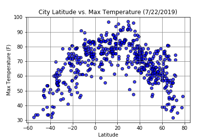

Summary: Latitude vs. X
For this assignment we visualized weather for over 500 cities across the world using OpenWeatherMap API to find relationships between temperature, latitude, humidity, cloudiness, and wind speed. We used Matplotlib to visualize the relationships between the variables.